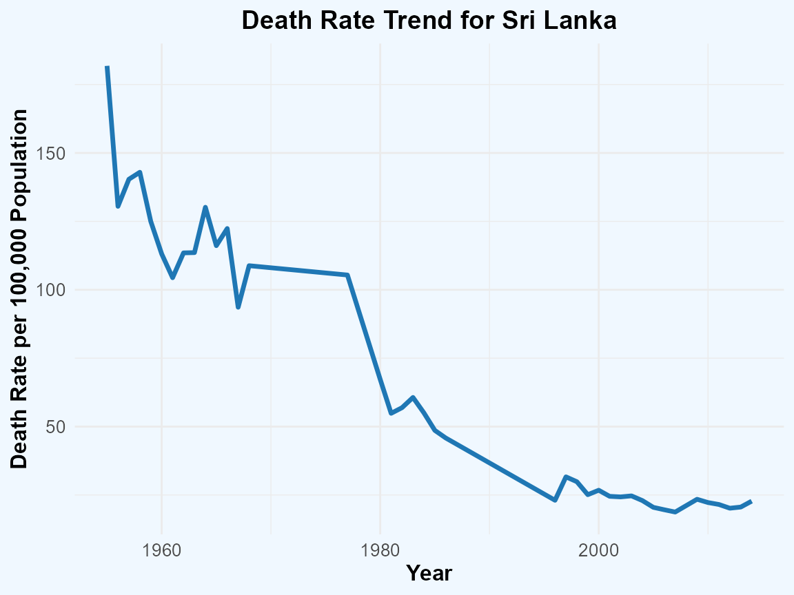

Welcome to diseasesdeathrate, an R package designed to
explore and analyze death rates associated with infectious and parasitic
diseases across Asian countries. This package provides tools to examine
trends over time, compare death rates between countries, and uncover
insights into public health challenges within the region.
The diseasesdeathrate package is ideal for
epidemiologists, public health professionals, and researchers focused on
Asia’s unique health landscape. Whether you’re looking to assess the
impact of health interventions or explore long-term disease trends, this
package provides the tools you need to gain valuable insights from the
infectious_parasitic_diseases_death_rate dataset.
With the diseasesdeathrate package, you can:
Calculate average death rates to identify overall disease burden
across countries and time (avg_Deathrate()).
Visualize temporal trends for specific countries to gain insights
into how death rates have evolved
(plot_death_rate_trend()).
The dataset covers a wide time span, specifically from 1950 to 2021, allowing for a comprehensive analysis of trends and comparisons across Asian countries over time. These tools enable you to draw meaningful conclusions about health patterns and public health achievements over the decades.
| variable | class | description |
|---|---|---|
| Entity | character | Country of record |
| Code | character | Country code |
| Year | integer | Year of data collection |
| death rate per 100,000 population | double | Age-standardized death rate per 100,000 population |
Below are descriptions of the primary functions included in the package:
avg_Deathrate() - Calculates the average death rate
of infectious and parasitic diseases for a specified country in Asia.
This function filters data by country, calculates the mean of death
rates, and returns the result. This function is useful for identifying
long-term trends in death rates for particular countries.
plot_death_rate_trend() - Creates a line plot
showing the trend of death rates from infectious and parasitic diseases
over time for a specified country in Asia. This function filters the
data by country and plots the death rate per 100,000 population against
the year. It is useful for visualizing changes in death rates and
identifying trends over the years for specific countries. This plot can
provide insights into the historical health outcomes and the
effectiveness of disease control measures.
head(infectious_parasitic_diseases_death_rate)
#> # A tibble: 6 × 4
#> Entity Code Year `death rate per 100,000 population`
#> <chr> <chr> <dbl> <dbl>
#> 1 Armenia ARM 1981 14.8
#> 2 Armenia ARM 1982 14.0
#> 3 Armenia ARM 1985 15.1
#> 4 Armenia ARM 1986 13.4
#> 5 Armenia ARM 1987 15.9
#> 6 Armenia ARM 1988 12.2avg_Deathrate() function
avg_Deathrate("Sri Lanka")
#> [1] 66.33511plot_death_rate_trend() function
plot_death_rate_trend(infectious_parasitic_diseases_death_rate, "Sri Lanka")